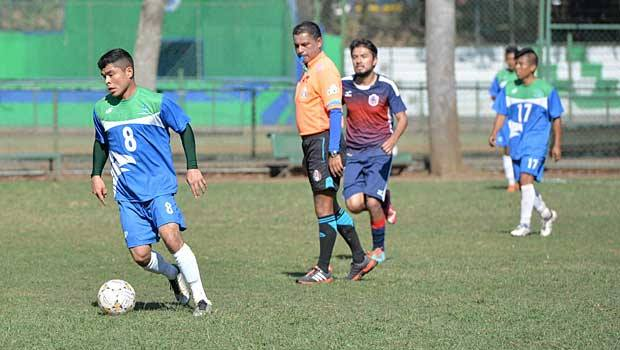

Coordinador: Lic. Gloria Elizabeth Torres Ramírez
Ubicación:Lic. Luis Echeverría Alvarez s/n, La Huerta, Jalisco C.P. 48850
Teléfono(s): 01 (357) 384.04.44
A continuación se describirá como es que se trabaja en el plantel y como está conformada
Educativo
Los estudiantes trabajan de acuerdo a la planeación de los maestros siendo una PDA donde los trabajos se presentaran en fecha establecida por estos. Se hace exámenes cada módulo para retomar los temas y calificar los conocimientos adquiridos. Los estudiantes se destacan en las participaciones educativas como municipal, hasta nivel estatal siendo las Matemáticas y Biología donde se destacan.
Deportivo
En el habito deportivo de los estudiantes se refleja notoriamente el futbol, voleibol y el basquetbol los deportes más comunes y más practicados en el mundo, se llevan a cabo entre estudiantes de distintos grados o invitando a otras escuelas como: el módulo de tecomates, extensión de tequesquitlan entre otros.
 Cultural
Esencialmente al ingreso de nuevos estudiantes en el plantel los estudiantes de 5° hacen una serie de eventos como bienvenidas, bailes, rallys, eventos deportivos con el fin de socializar y conocerlos, así los de primero se sentirán en confianza
La semana cultural de Casimiro castillo consiste en a participaciones los módulos y las extensiones de la preparatoria regional, haciendo eventos deportivos, fiestas, presentación de talentos, desfiles, bailables con el fin de socializar de manera más global. Los eventos de esta se hacen durante una semana.
concurso de catrines, es ya una tradición concursar por que se trata de vestir a un par de jóvenes de cada salón en catrines para concursar y los mejores calificados por el jurado se iría al jardín a concursar con otras escuelas, preparatorias e inclusive el preescolar.